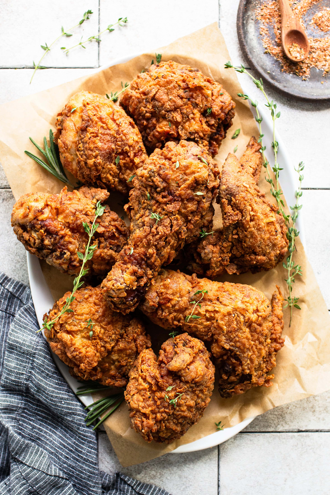

Fried Chicken
Home

Description
This fried chicken is buttermilk based. It is very crispy and
juicy. It is perfect for any occasion! It has the perfect amount
of spice and is very well seasoned. Not to mention it is
insanely cripsy. What are you wating for? Give it a try!
Ingredients
- 1 (4 pound) chicken, cut into pieces
- 1 cup buttermilk
- 2 cups all-purpose flour for coating
- 1 teaspoon paprika
- salt and pepper to taste
- 2 quarts vegetable oil for frying
Recipe
- Take your cut up chicken pieces and skin them if you prefer.
- Place flour in a large plastic bag (let the amount of
chicken you are cooking dictate the amount of flour you
use). Season flour with paprika (which helps to brown the
chicken), salt and pepper.
- Dip chicken pieces in buttermilk then, a few at a time,
transfer them into the bag with flour; seal the bag and
shake to coat well.
- Place the coated chicken on a cookie sheet or tray, and
cover with a clean dish towel or waxed paper. LET SIT
UNTIL THE FLOUR IS OF A PASTE-LIKE
CONSISTENCY. THIS IS CRUCIAL!
- Fill a large skillet (cast iron is best) about 1/3 to 1/2 full
with vegetable oil. Heat until VERY hot.
- Put in as many chicken pieces as the skillet can hold. Brown
the chicken in HOT oil on both sides.
- When browned, reduce heat and cover skillet; let cook for 30
minutes (the chicken will be cooked through but not crispy).
Remove cover, raise heat again, and continue to fry until
crispy.
- Drain fried chicken on paper towels. Depending on how
much chicken you have, you may have to fry in a few shifts.
Keep the finished chicken in a slightly warm oven while
preparing the rest.